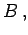

Inhalt Index DeskTop Bronstein

 Algebra und Diskrete Mathematik Mengenlehre Mengenbegriff, spezielle Mengen
Algebra und Diskrete Mathematik Mengenlehre Mengenbegriff, spezielle Mengen


| (5.36) |
dann heißt A Teilmenge von B, und man schreibt: Mit anderen Worten: A ist Teilmenge von  wenn alle Elemente von A auch zu B gehören. Damit gilt auch stets .
Gibt es für  in B weitere Elemente, die nicht in A vorkommen, so heißt A echte Teilmenge von
in B weitere Elemente, die nicht in A vorkommen, so heißt A echte Teilmenge von  , und man schreibt Die folgende Abbildung zeigt A als echte Teilmenge der Menge
, und man schreibt Die folgende Abbildung zeigt A als echte Teilmenge der Menge 
| Beispiel |
|
Es seien A = {2, 4, 6, 8, 10} eine Menge gerader Zahlen und eine Menge natürlicher Zahlen. Da die Menge A die ungeraden Zahlen nicht enthält, ist A eine echte Teilmenge von |
| Beispiel A |
|
Die Menge ist leer. |
| Beispiel B |
|
Für jede Menge M gilt d.h., die leere Menge ist Teilmenge jeder Menge. |
| (5.37) |
Diese Tatsache wird häufig zum Beweis der Gleichheit zweier Mengen benutzt.
| Beispiel |
|
Für die Menge M={a,b,c,} lautet die Potenzmenge
|